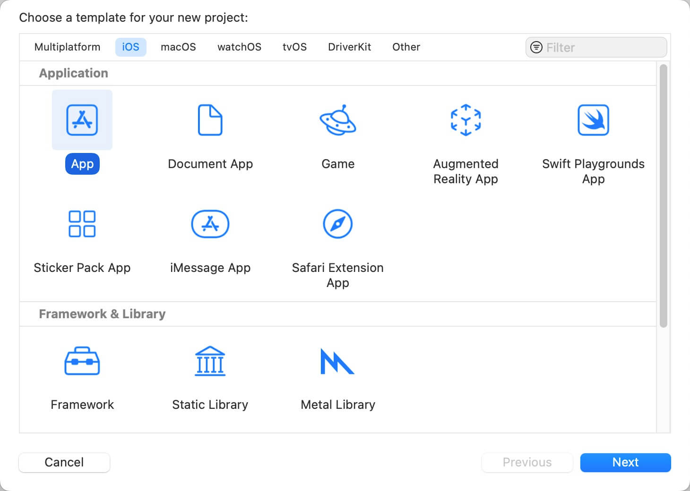
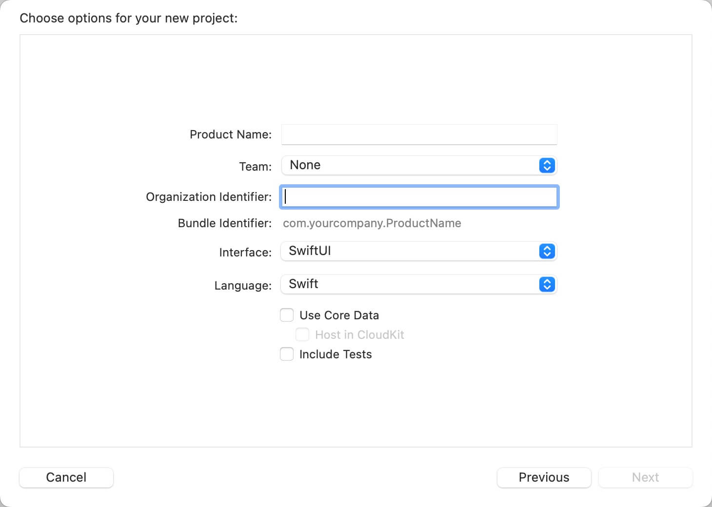
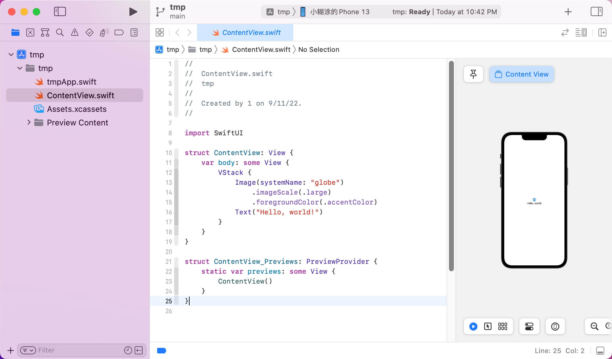

第1步：如下图所示，点击: Create a new Xcode Project

第2步：点击 Create a new Xcode Project 后，出现如下界面，选择 App 或其它Application类型，然后点击底部按钮 Next

第3步：如下图，填写: Product Name、Team、Organization Identifier。Interface和Language等其它项默认即可。填写后，点击底部按钮 Next

项目创建后，Xcode显示界面如下：

此时，将iPhone设备，连接到电脑上，然后按下快捷键Command+R，即可在手机预览。